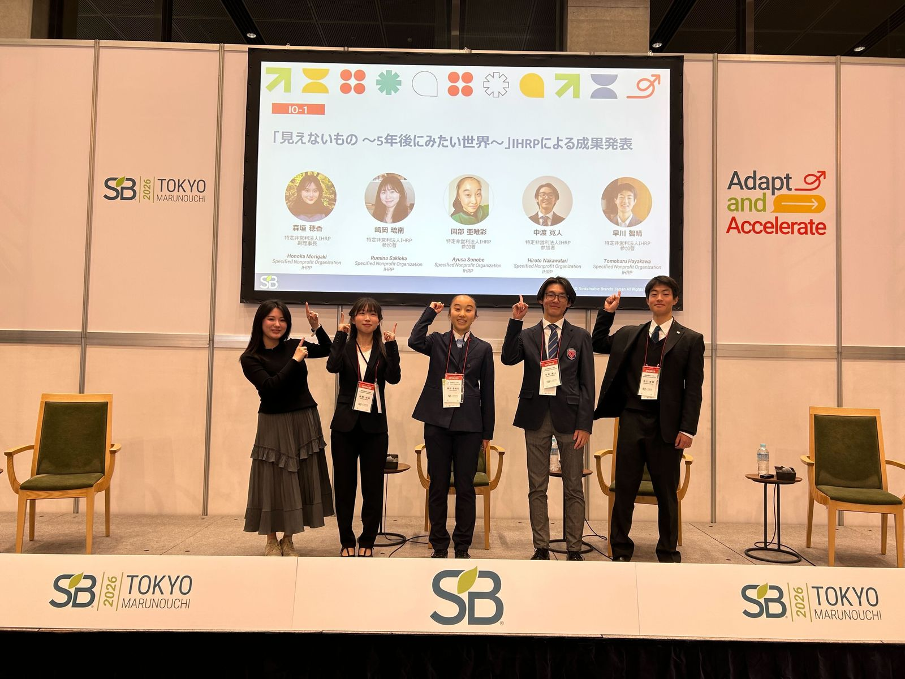
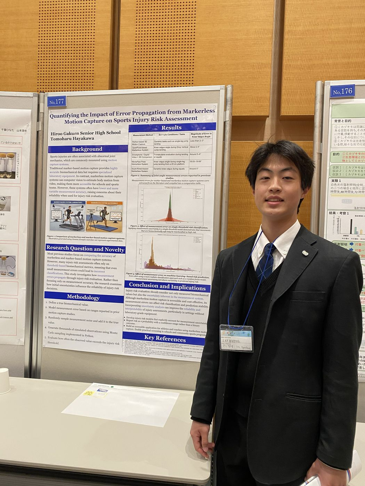

Each dot follows gradient descent plus thermal noise, which is Langevin dynamics. As the temperature cools, most settle into the deepest valley. This is simulated annealing. Tap the circle to reheat.
Researching compression methods for biosignal decoders and building low-cost embedded systems. I want assistive and rehab devices to reach people recovering from strokes and other neurological injuries. Also interested in AI safety.
Researcher @ National Institute of Informatics and the University of Tokyo's Matsuo–Iwasawa Lab.
What I'm building
Low-cost EMG controllerPrototyping
Reads muscle signals from surface electrodes and turns them into commands for assistive devices such as exoskeletons. Designed around parts a clinic or a student can afford.
Applying for grant funding
prunecalUnder review
Open-source Python package that combines structured pruning with label-free batch-norm recalibration. Deployed so EEG decoders and other bio-signal decoders can run on low cost devices.
With Assoc. Prof. Mahito Sugiyama, National Institute of Informatics. Funded by JST's STELLA program.
Research and talks

Presenting IHRP research at Sustainable Brands 2026 Tokyo Marunouchi

Poster on error propagation in markerless motion capture
Error propagation in AI pose estimationIHRP
Monte Carlo study of how measurement error in markerless motion capture changes injury-risk calls. Presented at two international conferences, one as an invited speaker, and one national.
GraphRAG for sports-injury preventionUniversity of Tokyo Matsuo–Iwasawa Lab
Comparing a Neo4j knowledge graph against plain RAG and LLM-only answers.
Suri no Tsubasa Summer SeminarFounded by Fields Medalist Heisuke Hironaka
One of about 40 students selected nationwide for a rigorous math camp started by the Fields Medalist Professor Hironaka Heisuke; did a presentation on AI's role in scientific discovery.
Other Projects
AI workflow toolsBak Corp, research and software intern
Software for enterprise clients' workflows, and tooling for building energy functions for quantum-annealing optimization.
eNaviFounder
Building an organization that provides free, no-experience-needed electronics events and hackathons for junior-high and high-school students across Japan, with support from companies and institutions.
Recognition
Bronze Medal, Asia-Pacific Olympiad in AI 2026 · Japan national team, 129 students from 18 nations
Gold Medal, Japan Olympiad in AI · national selection for IOAI
3rd Place, STEM Racing Japan National Finals · Professional Class
3rd Place, GLOBAL TECH Japan National Finals · MIT Beaver Works